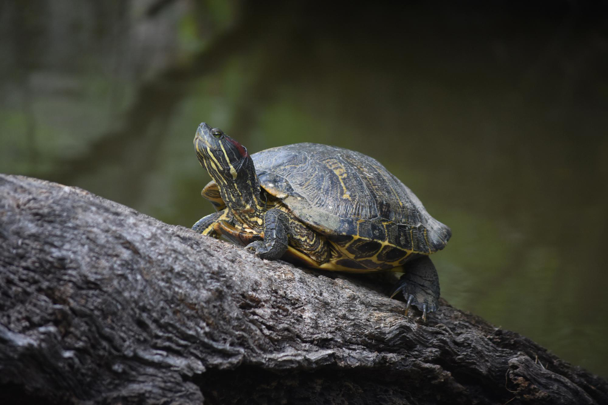
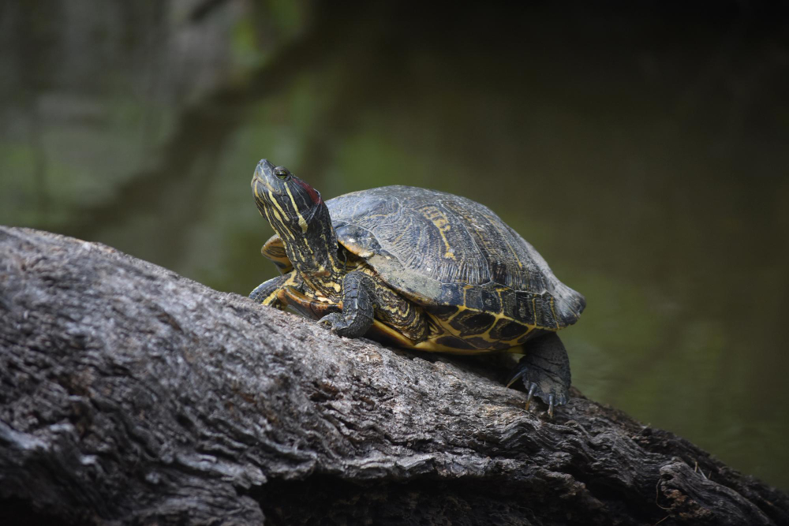

Si quieres ver más imágenes de Tortugas, da click en este enlace.
3 cosas que las Tortugas aman:
3 cosas que las Tortugas odian
¿Tu Tortuga es de agua o de tierra?
¿Qué tipo de personalidad tiene tu tortuga?
 
